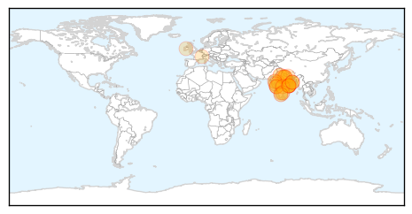
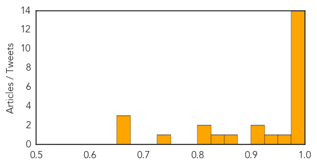

Meningitis
30-Day Web Trend
1 alerts, 0 warnings

30-Day Twitter Trend
2 alerts, 0 warnings

Article Locations

Article Confidences

Top Articles:
Top Tweets:
-
No tweets found for Mar 08, 2015
Swine Flu
30-Day Web Trend
13 alerts, 8 warnings

30-Day Twitter Trend
3 alerts, 0 warnings

Article Locations
Article Confidences
Top Articles:
- 1.000
- Swine flu in India: 1,319 people perish to the H1N1 virus
- 0.999
- 1 more swine flu death; toll 14
- 0.999
- 51 more swine flu deaths, affected cases cross 25,000 mark
- 0.999
- Swine Flu H1N1: 51 more deaths, affected cases cross 25,000 mark
- 0.999
- H1N1 breaches 800 mark in Mumbai, number akin to 2010 pandemic phase
- 0.998
- Swine flu Death toll Reaches 332 and 5,521 Cases
- 0.997
- Flu cases on the rise, 16 test H1N1 positive
- 0.996
- Manipur taking all steps to fight swine flu
- 0.995
- Another suspected swine flu patient dies
- 0.994
- Swine flu claims 14th life in city
- 0.991
- 32 new swine flu cases in Telangana
- 0.985
- 5 swine flu deaths in city
- 0.984
- Latest News & Gossip on Popular Trends at India.com
- 0.981
- Four More Die of Swine Flu in West Bengal
- 0.958
- Combating H1N1: Health Secretary leads hand-washing campaign
- 0.936
- Two deaths confirmed to have been caused by H1N1
- 0.919
- Odisha steps up measures to prevent swineflu
- 0.912
- Odisha steps up measures to prevent swineflu
- 0.860
- Odisha steps up measures to prevent swineflu
- 0.850
- H1N1 scare: Textile buyers keep away
- 0.808
- Hospital Vandalised After H1N1 Death
- 0.804
- Mulayam Singhs condition improves swine flu suspected
- 0.728
- Mulayam Singh Yadav recovering well: Doctors
- 0.668
- Mulayam Singh Yadav recovering well: Doctors
- 0.667
- Mulayam Singh Yadav recovering well: Doctors
- 0.666
- Mulayam Singh Yadav recovering well: Doctors
Top Tweets:
-
No tweets found for Mar 08, 2015